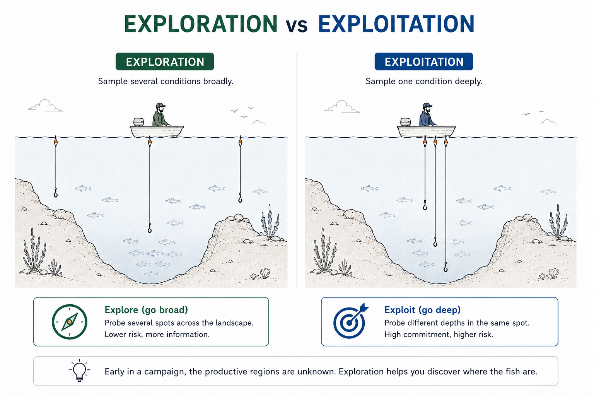

Overview: How a Protein Design Campaign Actually Runs
Before running any tools, let's understand the campaign architecture — what decisions get made, why, and what makes each campaign harder than it looks.
What is protein engineering?
Protein engineering is the deliberate modification or creation of proteins to achieve a useful function. A campaign may begin with an existing natural protein that needs to be improved, a known scaffold that can be retargeted, or—as in this volume—a desired function with no starting binder at all.
The goal is rarely to optimize a single property. A successful molecule must usually balance activity or binding with specificity, stability, expression, solubility, and manufacturability. Protein engineering is therefore not simply a matter of generating sequences; it is a structured search through a large design space for molecules that satisfy several competing requirements at once.
This page provides an overview of a typical protein engineering campaign's architecture, using the PD-L1 mini binder design as a case study. We cover the full campaign arc — from target definition to screening funnel to computational design stages — with a focus on the decisions and tradeoffs that shape each phase. The goal is to build intuition about how campaigns are structured and where computational design fits in, setting the stage for the detailed workflow in Part 1.
Two ways to use this material
📖 Free — Portfolio pages
The pages you're reading now (Parts 0–5) are fully public. They present the scientific narrative, methodology, key findings, visualizations, and interpretation for each stage of the campaign. They're designed to teach the reasoning behind the workflow — what was done, why, and what was learned.
🛠 Paid — Campaign guide
You could recreate much of this workflow yourself using public tools, documentation, and an AI coding assistant.
The campaign guide saves you that setup time by providing a working, end-to-end codebase: cleaned and annotated Colab notebooks, helper scripts, example inputs and outputs, troubleshooting notes, project journals, and a consistent data structure connecting each stage of the campaign.
The notebooks are designed to accept a new target. Supply your own PDB, define the binding surface or hotspot residues, and use the same infrastructure to generate, triage, simulate, compare, and prioritize binder candidates for your own project.
What this prepares you to do: run established protein-design models as a coordinated campaign, interpret their outputs, identify failure modes, and turn computational results into defensible molecular-design decisions.
Many current protein-design roles fall broadly into two categories: applying existing models to generate molecules and translate their outputs into experimental decisions, or developing and training new models using bespoke datasets. This guide is designed for the first category. It teaches campaign execution and scientific judgment, not neural-network architecture or model training.
Click any section to expand it.
1 Protein Engineering Campaigns run on DBTL cycles ▶
Protein engineering campaigns combine rational design, computational generation, library construction, screening, and—where appropriate—directed evolution to explore the sequence–structure–function landscape. Variation may be introduced through mutagenesis, recombination, computational design, or combinations of these approaches.
A campaign coordinates repeated rounds of design, construction, testing, and analysis to develop a molecule against a defined performance specification. Unlike a single experiment, a campaign has explicit budgets, timelines, decision gates, and stopping criteria.
In an academic study, a successful protein design may be treated as the endpoint. In a campaign, the result of Round 1 is the input to Round 2. Designs that fail can be as informative as those that succeed, but only when sequences, design conditions, assay results, and failure modes are captured systematically. Structured failure analysis is therefore part of the campaign, not an afterthought.
The organizing principle is the Design-Build-Test-Learn (DBTL) cycle:
🔵 Design
Propose candidate molecules using computational methods. This volume covers the design phase in depth.
🟢 Build
Synthesize DNA, express protein, purify. Many designs fail here. The build phase is a filter, not just manufacturing.
🟡 Test
Binding assays, stability assays, functional assays. Each answers a specific question with specific controls.
🟣 Learn
Analyze results, feed structured outcomes into the next round. The phase most campaigns do poorly.

Figure 1. The DBTL cycle. Each round passes through all four phases. The Learn phase feeds structured outcomes into the next Design round. This volume covers the Design phase; the Conclusion module connects to Build, Test, and Learn.
2 Target selection and success criteria ▶
How targets get chosen
In an academic setting, target selection is a research decision — you choose a protein because it's scientifically interesting or because your lab has relevant expertise. In industry, the target is usually handed to you. A disease biology team, a target validation group, or strategic leadership has determined that a specific molecule is the one to go after. Your job is not to choose the target. Your job is to design a molecule that modulates it in the specified way. In some organizations, even the modality is constrained — the company platform may be built around nanobodies, or the product strategy may require a bispecific format.
What you often do choose is the approach: which fold, which binding mode, which design tools, which screening strategy. That's where the campaign architecture begins.
For this volume, we use PD-L1 as an illustrative target to demonstrate the end-to-end design workflow. The choice is deliberate: PD-L1 is well-characterized structurally, biologically important, and challenging enough to be instructive. The campaign architecture — the DBTL cycle, the funnel, the decision gates — is general. The specifics (hotspot residues, binding geometry, assay format) are target-dependent. If you were designing an enzyme instead of a binder, the architecture wouldn't change, but the details of every stage would.
The target: PD-L1
PD-L1 is an immune-checkpoint ligand expressed by multiple cell types and frequently upregulated by tumors. Its interaction with PD-1 on activated T cells suppresses immune signaling. Blocking the PD-1–PD-L1 interaction is therefore an established immunotherapy strategy. The interface is captured in multiple co-complex structures, including PDB 4ZQK at 2.45 Å resolution, and presents a comparatively broad, shallow surface containing both polar and hydrophobic contacts.
The modality decision
"Inhibit PD-L1" is the brief. But how? A small protein binder? A nanobody? A peptide? Each modality carries different design constraints, expression systems, and development paths.
For this volume: a de novo mini-protein binder (25–100 residues) targeting the PD-1 binding face. Mini-proteins can be designed on accessible hardware, expressed in bacterial systems, and represent the modality where generative AI tools are most mature. Volume 2 covers VHH/nanobody design against the same target for direct modality comparison.
Success criteria
| Criterion | Target | Assay |
|---|---|---|
| Binding | Detectable target-dependent binding | BLI or SPR |
| Affinity | KD < 100 nM in Round 1; < 10 nM after optimization, or even tighter | SPR kinetics or equilibrium BLI |
| Functional blocking | Inhibits the PD-1–PD-L1 interaction | Competition BLI or blocking ELISA |
| Specificity | Minimal binding to defined counter-screen proteins | BLI, SPR, or plate-based counter-screen |
| Oligomeric state | Predominantly monomeric | SEC |
| Thermal stability | Tm > 50°C | DSF |
| Soluble yield | > 1 mg/L recovered from E. coli | A280 or BCA after purification |
3 Build the screening funnel ▶
Every campaign is shaped by one structural reality: each stage downstream is more expensive, slower, and lower throughput than the stage before it. This cost gradient underpins the screening funnel. You start wide — many candidates, cheap evaluation, lower quality data — and narrow progressively, investing more per candidate as variant confidence increases.
The campaign-level funnel
Before looking inside the computational design block, it helps to see where it sits in the full screening hierarchy. Computational design may produce a relatively small set of scaffolds, poses, sequence families, or preferred mutations. These outputs can then be expanded combinatorially into a much larger experimental library for display, droplet-based selection, or other ultra-high-throughput screening formats. The funnel below shows this complete campaign arc — from computationally informed library design through experimental screening tiers to validated leads.
Scaffolds, sequence families, and mutation sets
Display, droplets · 10⁶–10⁸
Plate-based · 10³–10⁵
Biophysical · 10²
10¹
Figure 2. A generic campaign-level screening funnel. Computational design identifies promising scaffolds, interfaces, sequence families, or mutable positions. These design hypotheses may then be expanded combinatorially into a much larger experimental library for ultra-high-throughput screening. Alternately, they may be tested directly in plates. Subsequent stages progressively reduce candidate numbers while increasing the cost and information obtained per candidate.
Counts versus accuracy
The fundamental tension at every stage: at the top, filters are fast and cheap but the data are noisy and approximate. At the bottom, assays measure the actual property of interest but each costs real money and time. Set filters too strict and you kill creative designs that might have worked. Set them too loose and you waste expensive downstream capacity on candidates that were never going to work. There is no universally correct threshold — the right stringency depends on budget, downstream throughput, and tolerance for false negatives versus false positives.
Figure 3. Example counts versus accuracy across the full screening hierarchy. Every threshold decision navigates this tradeoff.
Two scales
📓 Teaching scale (this volume)
Runs on Colab with free/low-cost GPUs. Hundreds of designs through fold validation, 31 carried through the full computational pipeline. Sufficient to learn the workflow, understand the decisions, and build a portfolio.
🏭 Illustrative production scale
A larger campaign might generate 10,000 or more backbones, carry thousands through inexpensive computational filters, run more expensive analyses on a smaller subset, and synthesize tens to hundreds of candidates. The exact numbers depend on compute, library capacity, assay throughput, and campaign risk tolerance. The funnel logic remains the same even when the scale changes.
4 Computational design — stages and tradeoffs ▶
Section 3 showed where computational design sits in the campaign-level funnel. Now we disaggregate it. The design phase has its own internal logic, its own decision gates, and at each stage there are tradeoffs that require judgment. Ultimately, the goal is to populate the design set with high-quality candidates that have a reasonable chance of success.
Target preparation
Prepare the target structure that will anchor the design campaign. Select the appropriate PDB entry and biological assembly, extract the relevant chain or chains, resolve alternate conformations, and assess missing residues, unresolved loops, cofactors, and other non-protein components. Because experimental structures capture particular conformational states, the choice of starting structure can influence which binding surfaces and geometries are accessible to the design models.
Over-investing in target preparation can delay the campaign before any designs are generated. Under-investing can introduce structural artifacts that propagate through every downstream stage. The goal is not to produce a perfect representation of the target, but to make defensible choices, document them, and revisit them if downstream results reveal a systematic problem.
Backbone generation (RFdiffusion)
RFdiffusion generates novel binder backbones positioned against the target surface. The model can be conditioned on target hotspot residues, binder length, and other geometric constraints, allowing the campaign to sample different regions of the design landscape. At this stage, the output is a set of candidate backbone geometries rather than complete protein sequences.
Imagine a fishing boat on open water. The sea floor varies in depth, and the fish are concentrated in only a few regions. Do you fish one location intensively, or sample several locations more broadly?

The same choice appears in generative design. A campaign might generate 1,000 backbones under one condition or 100 backbones under each of ten conditions. Early in a campaign, the productive regions of design space are unknown, so broad exploration is usually more informative. Each condition must still be sampled deeply enough to distinguish a genuine trend from stochastic variation. Volume 2 examines this tradeoff directly.
Sequence design (ProteinMPNN)
RFdiffusion produces backbone coordinates, but those coordinates do not yet define an amino-acid sequence. ProteinMPNN addresses this inverse-folding problem by proposing sequences that are compatible with the generated backbone and are therefore more likely to adopt the intended structure.
Multiple sequences can be generated for each backbone, adding sequence-level diversity without changing the overall geometry. ProteinMPNN primarily optimizes sequence–structure compatibility; it does not directly establish that a sequence will bind the target with high affinity.
This stage also introduces an important model handoff. A backbone that appears plausible to RFdiffusion may not support a sequence that independently recovers the intended fold. The resulting sequences must therefore be evaluated by a separate structure-prediction model.
Generating more sequences per backbone increases the chance of finding a sequence that recovers the intended structure, but it also increases downstream prediction and analysis costs. The appropriate depth depends on whether the campaign is still exploring backbone space or refining a smaller set of promising geometries.
Fold validation (ESMFold)
ESMFold predicts a structure from the designed sequence alone, without receiving the RFdiffusion backbone as input. The predicted structure is aligned to the intended design and evaluated using backbone RMSD, with per-residue confidence metrics such as pLDDT used as supporting evidence. This tests whether the sequence appears to encode the intended fold rather than merely fitting the backbone during sequence design.
What fold validation does and does not establish
A strict RMSD threshold retains only designs with close structural agreement but may discard borderline candidates that could behave differently in the target-bound state. A looser threshold preserves more candidates but admits more structural uncertainty. Thresholds should reflect the purpose and capacity of the campaign rather than being treated as universal cutoffs.
Interface triage (fingerprinting)
Interface fingerprinting characterizes how each designed binder engages the target. The analysis can include residue–residue contacts, buried surface area, hotspot coverage, interaction types, shape complementarity, and comparison with known ligand or receptor contacts where an appropriate reference complex exists.
These measurements help identify geometrically plausible and mechanistically distinct interfaces, but they remain static structural proxies. Their relationship to binding affinity is noisy, so they are most useful when interpreted together rather than optimized individually.
The shortlist should be a portfolio, not simply the top rows of a score-sorted table. Preserving diversity across poses, interface geometries, hotspot usage, and sequences reduces the risk that every selected candidate shares the same hidden failure mode.
Molecular dynamics simulation
Molecular dynamics simulations test how designed complexes behave under an explicit physical model over time. After system preparation, solvation, energy minimization, and equilibration, the trajectories can be analyzed for binder and target RMSD, radius of gyration, interface contacts, hydrogen-bond persistence, hotspot occupancy, and changes in the relative orientation of the binding partners.
MD is particularly useful for identifying obvious structural or interfacial instability that is not apparent in a single static model. It does not provide a direct measurement of binding affinity, and the conclusions are limited by the simulation length, force field, starting structure, and sampling achieved. In this workflow, MD functions primarily as a stress test and comparative filter.
Longer simulations provide more opportunity to observe conformational changes but restrict the number of candidates that can be evaluated. Shorter simulations support broader screening but may miss slower failure modes. Simulation depth should increase as the candidate pool narrows.
Independent complex prediction (Boltz-2)
Boltz-2 predicts the binder–target complex from sequence, without receiving the RFdiffusion-designed backbone or starting pose. It therefore provides a partially independent test of whether the intended binding geometry is recoverable from the designed sequences rather than being imposed only by the original generative model.
The predicted complex can be compared with the RFdiffusion design using global pose agreement, interface RMSD, hotspot recovery, contact overlap, and model-confidence metrics such as ipTM. Agreement between the two modeling paths strengthens the structural hypothesis; disagreement identifies designs whose interface geometry is more model-dependent or uncertain.
Requiring close agreement between independent models produces a more conservative shortlist, but it may also eliminate unconventional designs that one model represents poorly. Model agreement is therefore evidence to weigh, not an automatic pass–fail rule.
Scoring and prioritization
The final stage integrates evidence from backbone generation, sequence design, fold recovery, interface fingerprinting, molecular dynamics, and independent complex prediction. Because no single computational metric reliably captures all aspects of design quality, candidates are prioritized using a consensus scorecard rather than one dominant score.
The scorecard should preserve the underlying measurements so that the reasons for each ranking remain visible. Weighting choices are campaign-specific judgment calls: they should reflect the intended use of the binder, known target biology, downstream assay capacity, and the types of uncertainty the campaign is most willing to tolerate.
A single composite score makes candidates easy to rank but can conceal contradictory evidence and arbitrary weighting decisions. A more interpretable scorecard preserves the component metrics and uses the final ranking as a decision aid rather than a claim of absolute design quality.
5 Real-world build, test, and learn ▶
The generative and predictive models in this pipeline primarily evaluate structural plausibility: backbone geometry, sequence–backbone compatibility,fold recovery, interface organization, and complex-prediction confidence. These outputs do not directly establish soluble expression, aggregation resistance, thermal stability, or the other properties that determine whether a designed protein can be produced and used reliably.
Developability
Developability is the collection of biophysical properties that determine whether a protein can be manufactured, formulated, and used in practice. Aggregation propensity, chemical liabilities (oxidation-prone methionines, deamidation-prone asparagines, unpaired cysteines), surface hydrophobicity, charge distribution — all of these affect whether a protein that "works" in a binding assay can actually advance. In a proof-of-concept study, developability may be secondary (if it binds, you publish). In any translational campaign, it's primary. The campaign should detect developability problems early — at the expression screening stage, not after weeks of detailed characterization on a protein that turns out to aggregate at room temperature.
What does attrition actually look like?
What happens to the shortlist of computational designs
The ranked shortlist enters Build → Test → Learn:
Build: Synthesize DNA (gene fragments, codon-optimized), clone into expression vectors, transform, express in E. coli, purify. Each step has failure modes. A well-designed HTS workflow can move from DNA design to assay-ready protein in 3–4 weeks for a 96-well plate of constructs.
Test: Decision gates cascade. Expression → solubility → monomeric purification → detectable binding → dose-response → competition → stability. Don't waste expensive assay time on constructs that failed expression.
Learn: Link experimental outcomes to computational features in a structured database. Which design conditions produced binders? Which structural metrics correlated with expression? This is how Round 2 gets smarter — and it requires the database to exist before the experiments run.
6 Advance, repeat, pivot, or stop ▶
When is a campaign done? This is harder than it looks.
✓ Specification met
A binder meets the target product profile. The campaign advances to the next development stage.
⊘ Design space exhausted
Planned conditions explored, nothing meets spec. Not failure — a negative result that triggers strategic decisions: pivot modality, relax the spec, or stop.
⏱ Resources depleted
Time or budget is gone. Advance the best candidates, document what you'd do with more resources, structure the data for others.
⚠ Systematic problem
Round 1 reveals a consistent bias — all designs contact the wrong face, all high-scorers aggregate. Redesign the approach, not another round of the same strategy.
The worst outcome is a campaign that runs indefinitely without clear stopping criteria — always "just one more round" without a defined target or a framework for deciding when enough is enough.
7 Continuous improvement of the pipeline itself ▶
Each round of a campaign doesn't just improve the designs — it should improve the infrastructure. Structured metrics from each round tell you how well your screening pipeline is working, not just how well your molecules are performing. Are your assays precise enough to rank candidates reliably? Is your liquid handler introducing systematic errors? Where are the bottlenecks in cycle time?
In practice, this means tracking operational metrics alongside scientific ones. The percentage of wells producing viable thermal stability data might improve from 48% to 60% to 73% across successive library builds — not because the variants got better, but because the protein production and assay protocols were refined. Sequencing QC pass rates improve as you switch from outsourced to in-house nanopore sequencing. Cycle time drops from 5 weeks to 4 to 3 as pain points in strain build, purification, and colony picking are systematically addressed.
The same principle applies to computational design. Each round should refine not just which conditions to explore, but how the pipeline processes candidates: better filtering thresholds calibrated against experimental outcomes, faster simulation protocols, more informative scoring functions, tighter integration between computational features and experimental databases. The pipeline is a product that gets better with use — if you're measuring the right things.
What the rest of this volume delivers
backbone, sequence, fold
sensitivity
fingerprinting
MD simulation
Boltz-2
experiment + DB